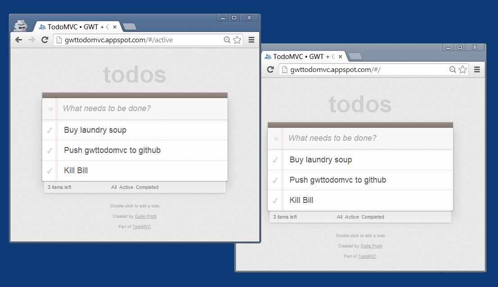

Justin Fagnani presented in Google I/O 2011 (in 10 minutes) a conceptual overview of how his team builds collaborative apps at Google using GWT. His explanation is brilliant, but implementing such a scheme based only on the presentation would be a challenge, and to my knowledge there are no publicly available sample implementations.
What comes next is a TodoMVC app which supports collaborative editing. When a user adds, modifies or removes a task, the change is reflected in real-time in all other browsers. You may try the live demo. It's implemented using:
- GWT
- App Engine Channel API
- The Command Pattern
Understanding the code requires that you listened to the aforementioned 10 minutes presentation.
